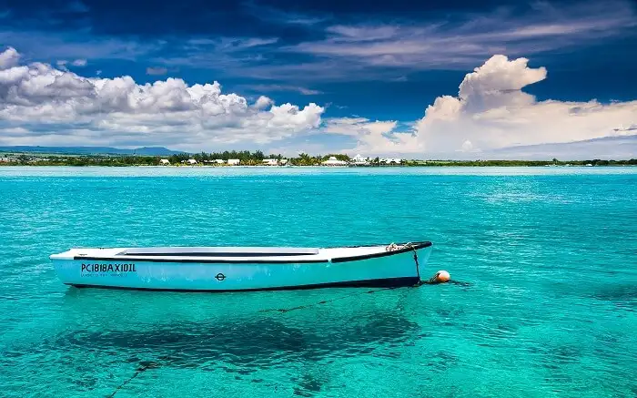

Hobby
Badminton
I enjoy playing badminton. It's an easy sport to learn.

Swimming
Mauritius is known for its blue beaches
Hiking
I find hiking very relaxing.
I live in the North of Mauritius. I just finished Le wagon bootcamp in webdevlopment. I am currently looking for a remote job in webdevlopment. I joined kreativstorm Front end program to improve my coding skills and learn new skills. I enjoy coding as it allows me to learn something new each time. During my freetime I look for resources where I can learn about new technologies.